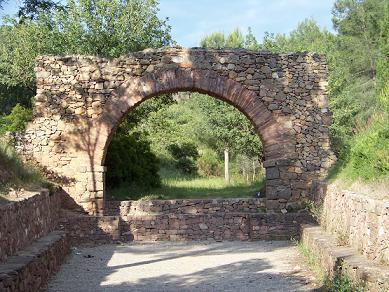

|
EL PUNTAL DELS LLOPS
El Puntal dels Llops, Olocau, era una atalaya ibera dependiente de Edeta, encargada de la defensa y control del territorio. Situado en un punto estratégico dominando el Camp de Túria y la entrada del paso natural del barranco del Carraixet. Está delimitado por una muralla en cuyo extremo norte se alza una torre de vigilancia, de planta cuadrangular. En su interior había 17 viviendas distribuidas a ambos lados de una estrecha calle. Data de finales del siglo V a.e.c, y fue destruido y abandonado a principios del siglo II a.e.c. durante la Segunda Guerra Púnica por las tropas de Aníbal.
En el término municipal se han encontrado restos de la Edad de los Metales, del Bronce, iberos y romanos. De época romana se conserva parte del acueducto, el Arquet; los hornos al pie del Puntal, en la partida de la Pedra Grossa; y villas en las partidas de Pitxiri.  |